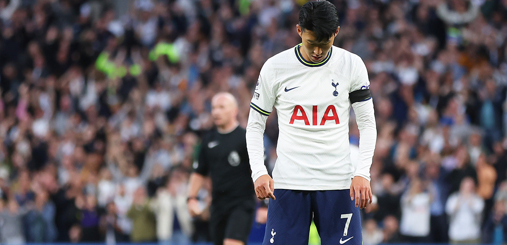

손흥민 :: 솔직히 많이 속상했어요.
2022. 09. 19. 21:14

Heung-Min Son laid on the line what it meant to open his account for the season in such spectacular
style with a hat-trick off the bench in our 6-2 victory against Leicester City in the Premier League
on Saturday.
Sonny delivered a memorable hat-trick in 13 minutes, 21 seconds. The first, a beauty with his
right foot into the top corner from 25 yards, the second just as good, this time with his left foot
into the top corner from similar distance and the third, a one-on-one finish initially ruled out for
offside, but awarded after a VAR check. That completed the 6-2 scoreline, and an emotional evening
for Sonny.
Speaking pitchside on N17 Live, Sonny opened up to presenter Ben Haines and Club commentator Rob Daly.
“To be honest, if you look back at my performances, I wasn’t really happy because obviously the
team, performance-wise, I think we could do better but the results have been good. I was happy about
that, but for me, some unlucky things, some disappointing finishing, made me sad and unhappy," he
said.
“Today (when he scored his first goal), the frustration and disappointment just came out of my body.
I couldn’t move. I was looking at the stands and thinking, ‘I’m out of this tunnel’. To be honest, I
was emotional, it’s been a tough moment for me. I hope this positive energy comes back into my body
and into the team, and then I can bring many positive things to the team, I hope.”
Asked how it felt to come off the bench, a rarity for Sonny over the last few seasons, he replied:
“Everyone wants to be on the pitch in the starting XI, that’s normal. You need to show the anger,
the disappointment on the pitch. Especially today, it was really tough, especially in the first
half, 2-2, ups and downs, then an amazing press from Rodrigo to score the third, really early in the
second half, but the game was not finished.
“I came on and I just wanted to help the team. Then, the chance was there, and three amazing, lucky
finishes, meant we were looking good. The goals are important, I just want to help the team on the
pitch, I’m really happy because I helped the team, and we are at the top of the table."
N17 | The Review Show | Spurs vs Leicester